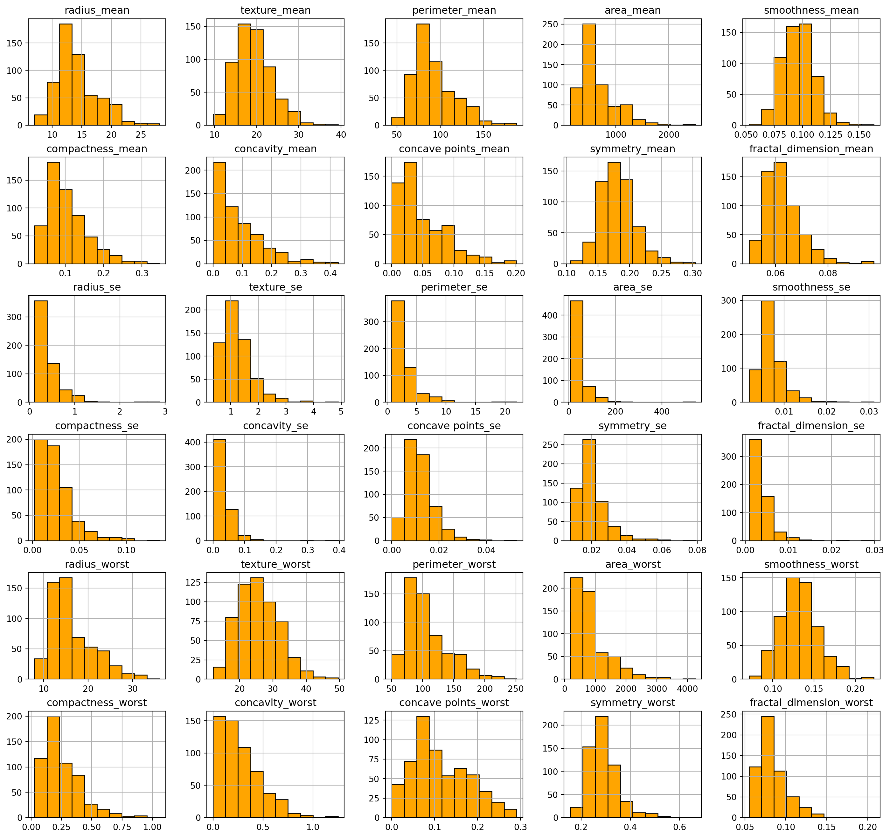
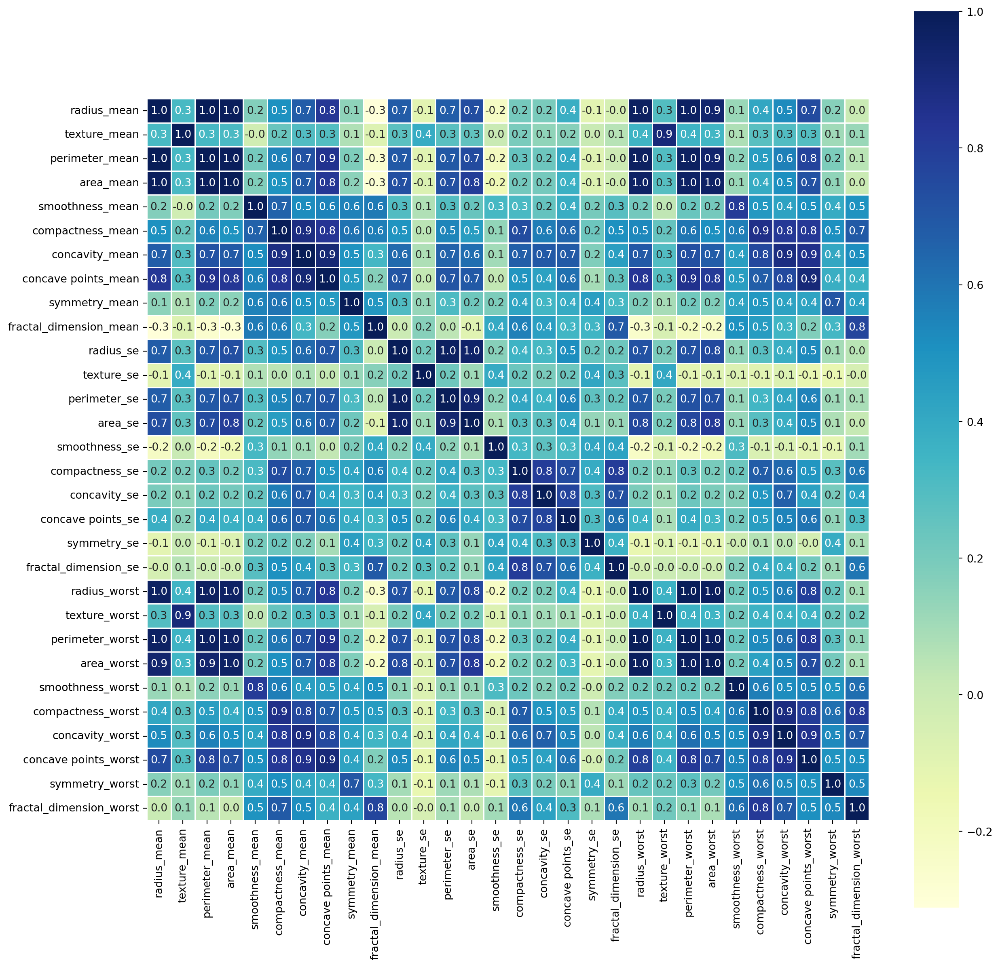
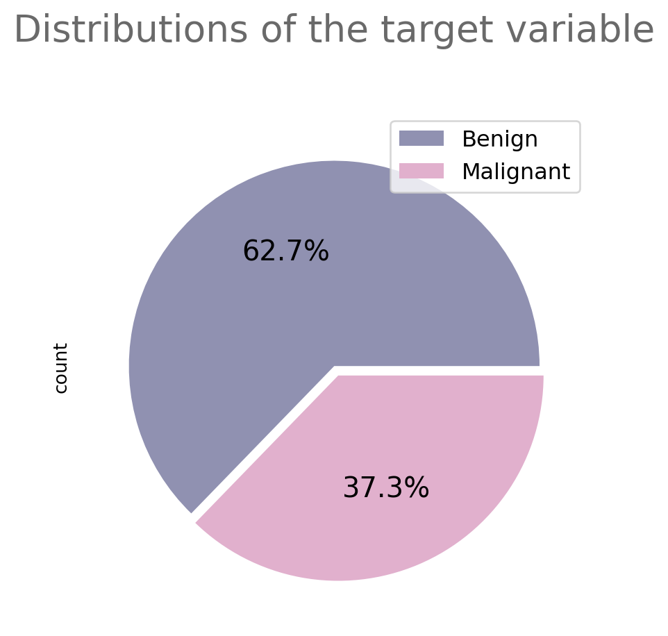
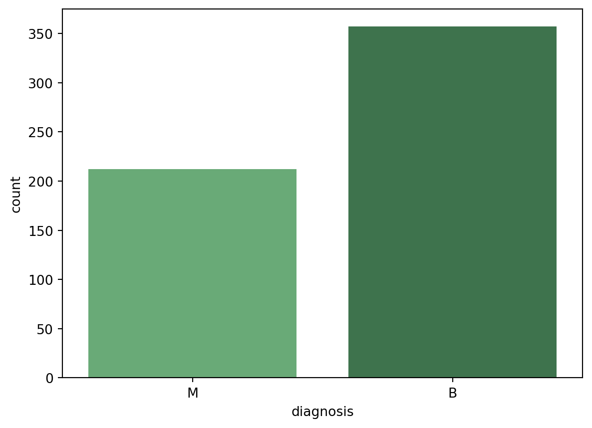

# Import Libary
import numpy as np # linear algebra
import pandas as pd # data processing
# Libraries for visualization:
import seaborn as sns
import matplotlib.pyplot as plt
import plotly.express as px
import plotly.graph_objects as go
from plotly.offline import init_notebook_mode, iplot
init_notebook_mode(connected = True)
from plotly.subplots import make_subplots
import warnings
warnings.filterwarnings("ignore")This is a post with executable code.
data=pd.read_csv("breast-cancer.csv")
data.head()| id | diagnosis | radius_mean | texture_mean | perimeter_mean | area_mean | smoothness_mean | compactness_mean | concavity_mean | concave points_mean | ... | radius_worst | texture_worst | perimeter_worst | area_worst | smoothness_worst | compactness_worst | concavity_worst | concave points_worst | symmetry_worst | fractal_dimension_worst | |
|---|---|---|---|---|---|---|---|---|---|---|---|---|---|---|---|---|---|---|---|---|---|
| 0 | 842302 | M | 17.99 | 10.38 | 122.80 | 1001.0 | 0.11840 | 0.27760 | 0.3001 | 0.14710 | ... | 25.38 | 17.33 | 184.60 | 2019.0 | 0.1622 | 0.6656 | 0.7119 | 0.2654 | 0.4601 | 0.11890 |
| 1 | 842517 | M | 20.57 | 17.77 | 132.90 | 1326.0 | 0.08474 | 0.07864 | 0.0869 | 0.07017 | ... | 24.99 | 23.41 | 158.80 | 1956.0 | 0.1238 | 0.1866 | 0.2416 | 0.1860 | 0.2750 | 0.08902 |
| 2 | 84300903 | M | 19.69 | 21.25 | 130.00 | 1203.0 | 0.10960 | 0.15990 | 0.1974 | 0.12790 | ... | 23.57 | 25.53 | 152.50 | 1709.0 | 0.1444 | 0.4245 | 0.4504 | 0.2430 | 0.3613 | 0.08758 |
| 3 | 84348301 | M | 11.42 | 20.38 | 77.58 | 386.1 | 0.14250 | 0.28390 | 0.2414 | 0.10520 | ... | 14.91 | 26.50 | 98.87 | 567.7 | 0.2098 | 0.8663 | 0.6869 | 0.2575 | 0.6638 | 0.17300 |
| 4 | 84358402 | M | 20.29 | 14.34 | 135.10 | 1297.0 | 0.10030 | 0.13280 | 0.1980 | 0.10430 | ... | 22.54 | 16.67 | 152.20 | 1575.0 | 0.1374 | 0.2050 | 0.4000 | 0.1625 | 0.2364 | 0.07678 |
5 rows × 32 columns
# Download and prepare the data
data.drop(["id"],axis=1,inplace=True)data.describe()| radius_mean | texture_mean | perimeter_mean | area_mean | smoothness_mean | compactness_mean | concavity_mean | concave points_mean | symmetry_mean | fractal_dimension_mean | ... | radius_worst | texture_worst | perimeter_worst | area_worst | smoothness_worst | compactness_worst | concavity_worst | concave points_worst | symmetry_worst | fractal_dimension_worst | |
|---|---|---|---|---|---|---|---|---|---|---|---|---|---|---|---|---|---|---|---|---|---|
| count | 569.000000 | 569.000000 | 569.000000 | 569.000000 | 569.000000 | 569.000000 | 569.000000 | 569.000000 | 569.000000 | 569.000000 | ... | 569.000000 | 569.000000 | 569.000000 | 569.000000 | 569.000000 | 569.000000 | 569.000000 | 569.000000 | 569.000000 | 569.000000 |
| mean | 14.127292 | 19.289649 | 91.969033 | 654.889104 | 0.096360 | 0.104341 | 0.088799 | 0.048919 | 0.181162 | 0.062798 | ... | 16.269190 | 25.677223 | 107.261213 | 880.583128 | 0.132369 | 0.254265 | 0.272188 | 0.114606 | 0.290076 | 0.083946 |
| std | 3.524049 | 4.301036 | 24.298981 | 351.914129 | 0.014064 | 0.052813 | 0.079720 | 0.038803 | 0.027414 | 0.007060 | ... | 4.833242 | 6.146258 | 33.602542 | 569.356993 | 0.022832 | 0.157336 | 0.208624 | 0.065732 | 0.061867 | 0.018061 |
| min | 6.981000 | 9.710000 | 43.790000 | 143.500000 | 0.052630 | 0.019380 | 0.000000 | 0.000000 | 0.106000 | 0.049960 | ... | 7.930000 | 12.020000 | 50.410000 | 185.200000 | 0.071170 | 0.027290 | 0.000000 | 0.000000 | 0.156500 | 0.055040 |
| 25% | 11.700000 | 16.170000 | 75.170000 | 420.300000 | 0.086370 | 0.064920 | 0.029560 | 0.020310 | 0.161900 | 0.057700 | ... | 13.010000 | 21.080000 | 84.110000 | 515.300000 | 0.116600 | 0.147200 | 0.114500 | 0.064930 | 0.250400 | 0.071460 |
| 50% | 13.370000 | 18.840000 | 86.240000 | 551.100000 | 0.095870 | 0.092630 | 0.061540 | 0.033500 | 0.179200 | 0.061540 | ... | 14.970000 | 25.410000 | 97.660000 | 686.500000 | 0.131300 | 0.211900 | 0.226700 | 0.099930 | 0.282200 | 0.080040 |
| 75% | 15.780000 | 21.800000 | 104.100000 | 782.700000 | 0.105300 | 0.130400 | 0.130700 | 0.074000 | 0.195700 | 0.066120 | ... | 18.790000 | 29.720000 | 125.400000 | 1084.000000 | 0.146000 | 0.339100 | 0.382900 | 0.161400 | 0.317900 | 0.092080 |
| max | 28.110000 | 39.280000 | 188.500000 | 2501.000000 | 0.163400 | 0.345400 | 0.426800 | 0.201200 | 0.304000 | 0.097440 | ... | 36.040000 | 49.540000 | 251.200000 | 4254.000000 | 0.222600 | 1.058000 | 1.252000 | 0.291000 | 0.663800 | 0.207500 |
8 rows × 30 columns
# Check for missing value:
data.isnull().sum()diagnosis 0
radius_mean 0
texture_mean 0
perimeter_mean 0
area_mean 0
smoothness_mean 0
compactness_mean 0
concavity_mean 0
concave points_mean 0
symmetry_mean 0
fractal_dimension_mean 0
radius_se 0
texture_se 0
perimeter_se 0
area_se 0
smoothness_se 0
compactness_se 0
concavity_se 0
concave points_se 0
symmetry_se 0
fractal_dimension_se 0
radius_worst 0
texture_worst 0
perimeter_worst 0
area_worst 0
smoothness_worst 0
compactness_worst 0
concavity_worst 0
concave points_worst 0
symmetry_worst 0
fractal_dimension_worst 0
dtype: int64data.hist(figsize = (18,17),color = 'orange',edgecolor = 'black');
Data Visualization
Histogram A histogram is a bar graph representation of a grouped data distribution. In other words, it is the transfer of data consisting of repetitive numbers to the table first, and to the chart by using the table, in other words, the graph of the data groups is displayed in rectangular columns.
# Check strength of the relationship between variables:
corr=data.corr(numeric_only = True)
f,ax=plt.subplots(figsize=(15,15))
sns.heatmap(corr,annot=True,linewidths=0.5,fmt=".1f",ax=ax,cmap="YlGnBu",square=True)
plt.show()
Countplot and PiePlot A count plot can be thought of as a histogram across a categorical, instead of quantitative, variable. A Pie Chart is a type of graph that displays data in a circular graph. The pieces of the graph are proportional to the fraction of the whole in each category.
We examined distribution of outcome with countplot and pieplot.
print('Count of M or B cells in diagnosis:')
data['diagnosis'].value_counts()Count of M or B cells in diagnosis:diagnosis
B 357
M 212
Name: count, dtype: int64# Plot distribution
data['diagnosis'].value_counts().plot(kind='pie', labels = ['', ''], autopct = '%1.1F%%', colors = ['#9091b1','#e1b0cd'],
explode = [0,0.05], textprops = {'fontsize':15})
plt.legend(labels=['Benign', 'Malignant'], fontsize=12)
plt.title('Distributions of the target variable\n', fontsize=20, color = '#6a6a6a', y=1.03)
plt.show()
sns.countplot(x='diagnosis',data=data,palette='Greens_d')
plt.show()
## M for Malignant
## B for Benign
#Libraries for ML model
from sklearn.preprocessing import LabelBinarizer
from sklearn.model_selection import train_test_split
from sklearn.linear_model import LogisticRegression
from sklearn.neighbors import KNeighborsClassifier
from sklearn.tree import DecisionTreeClassifier
from sklearn.ensemble import RandomForestClassifier
from sklearn.ensemble import GradientBoostingClassifier
from xgboost import XGBClassifier
from sklearn.naive_bayes import GaussianNB
from lightgbm import LGBMClassifier
from catboost import CatBoostClassifier
from sklearn.metrics import classification_report,confusion_matrix,accuracy_score,f1_score,recall_score,precision_score,roc_auc_scorey=data["diagnosis"]
X=data.drop(["diagnosis"],axis=1)
print("X shape",X.shape)
print("y shape",y.shape)X shape (569, 30)
y shape (569,)one_hot=LabelBinarizer()
y=one_hot.fit_transform(y)X_train,X_test,y_train,y_test=train_test_split(X,y,test_size=0.30,random_state=42,shuffle=True)print("X_train shape",X_train.shape)
print("y_train shape",y_train.shape)
print("X_test shape",X_test.shape)
print("y_test shape",y_test.shape)X_train shape (398, 30)
y_train shape (398, 1)
X_test shape (171, 30)
y_test shape (171, 1)# Lets create model:
def classification_models(model):
y_pred=model.fit(X_train,y_train).predict(X_test)
accuracy=accuracy_score(y_pred,y_test)
roc_score=roc_auc_score(y_test,y_pred)
f1=f1_score(y_pred,y_test)
precision=precision_score(y_pred,y_test)
recall=recall_score(y_pred,y_test)
results=pd.DataFrame({"Values":[accuracy,roc_score,f1,precision,recall],
"Metrics":["Accuracy","ROC-AUC","F1","Precision","Recall"]})
# Visualize Results:
fig=make_subplots(rows=1,cols=1)
fig.add_bar(x=[round(i,5) for i in results["Values"]],
y=results["Metrics"],
text=[round(i,5) for i in results["Values"]],orientation="h",textposition="inside",name="Values",
marker=dict(color=["khaki","bisque","palegreen","skyblue","plum"],line_color="beige",line_width=1.5),row=1,col=1)
fig.update_layout(title={'text': model.__class__.__name__ ,
'y':0.9,
'x':0.5,
'xanchor': 'center',
'yanchor': 'top'},
template='plotly_white')
fig.update_xaxes(range=[0,1], row = 1, col = 1)
iplot(fig)
my_models= [
LogisticRegression(),
KNeighborsClassifier(),
RandomForestClassifier(),
XGBClassifier(),
GradientBoostingClassifier(),
GaussianNB(),
DecisionTreeClassifier()
]
for model in my_models:
classification_models(model)print("X_train shape",X_train.shape)
print("y_train shape",y_train.shape)
print("X_test shape",X_test.shape)
print("y_test shape",y_test.shape)X_train shape (398, 30)
y_train shape (398, 1)
X_test shape (171, 30)
y_test shape (171, 1)